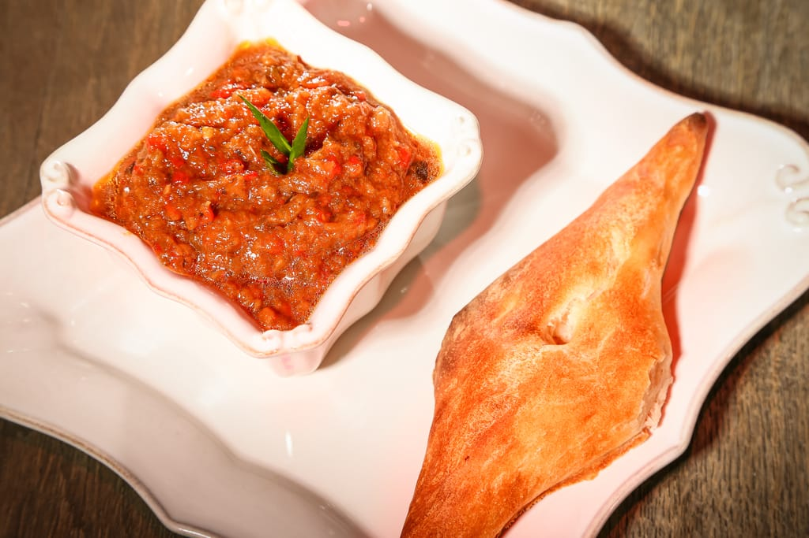
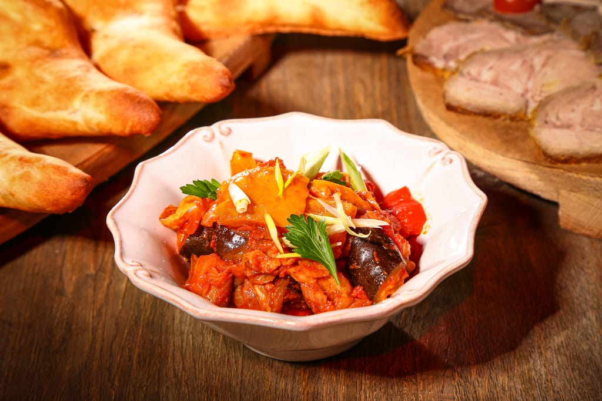
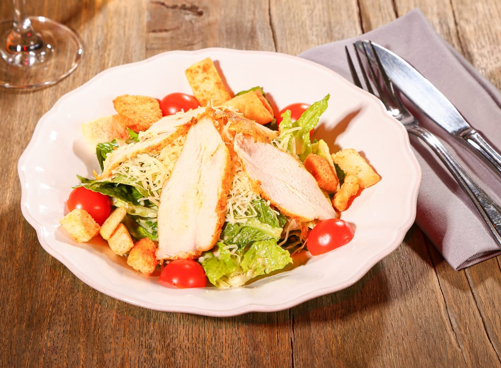
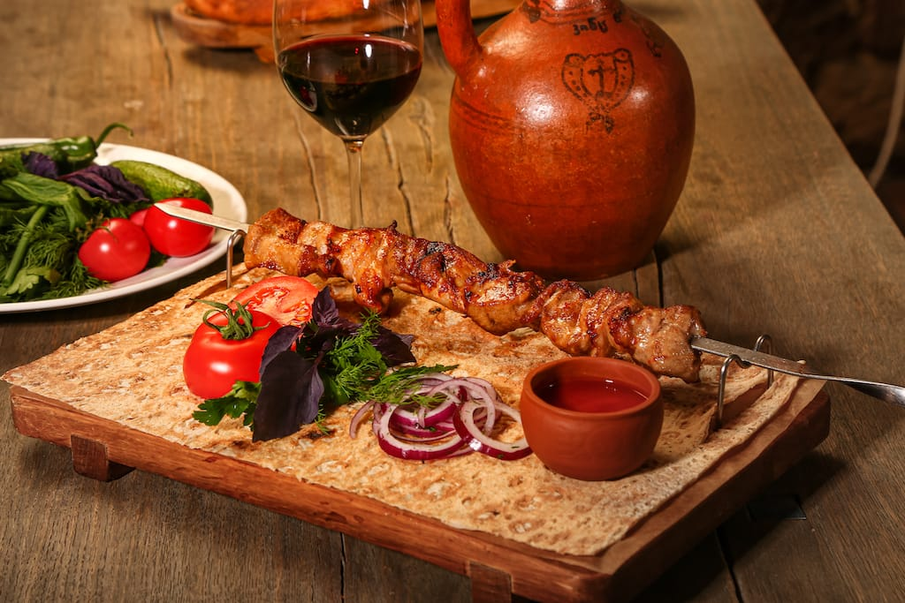
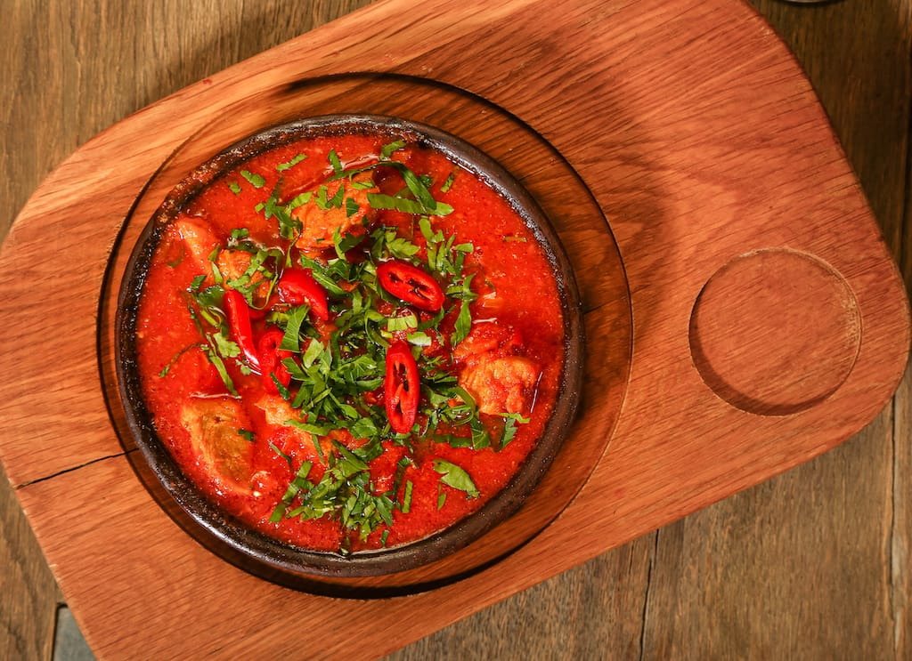
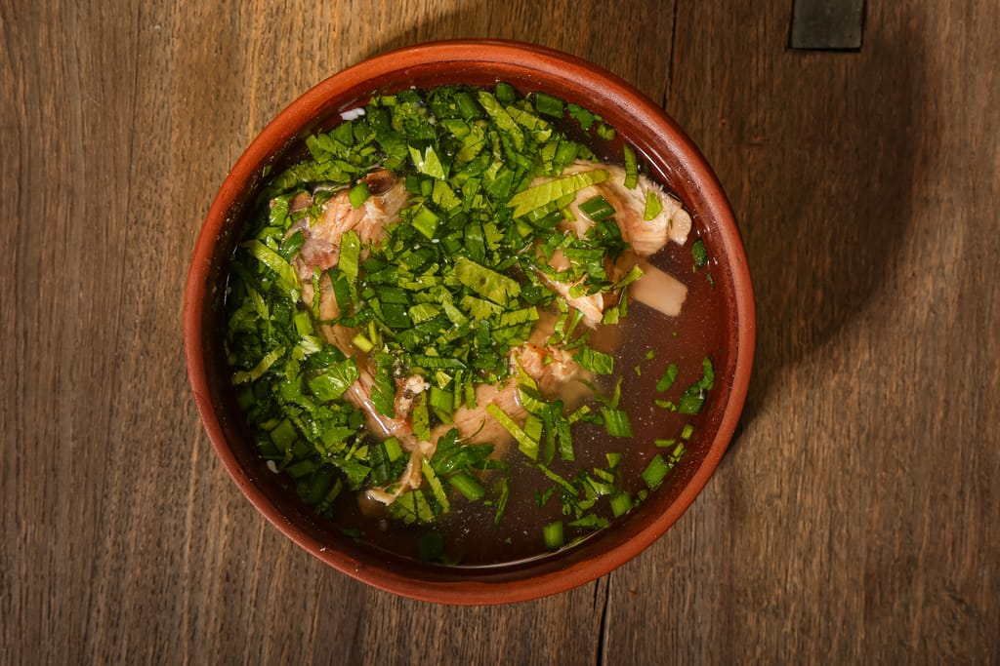
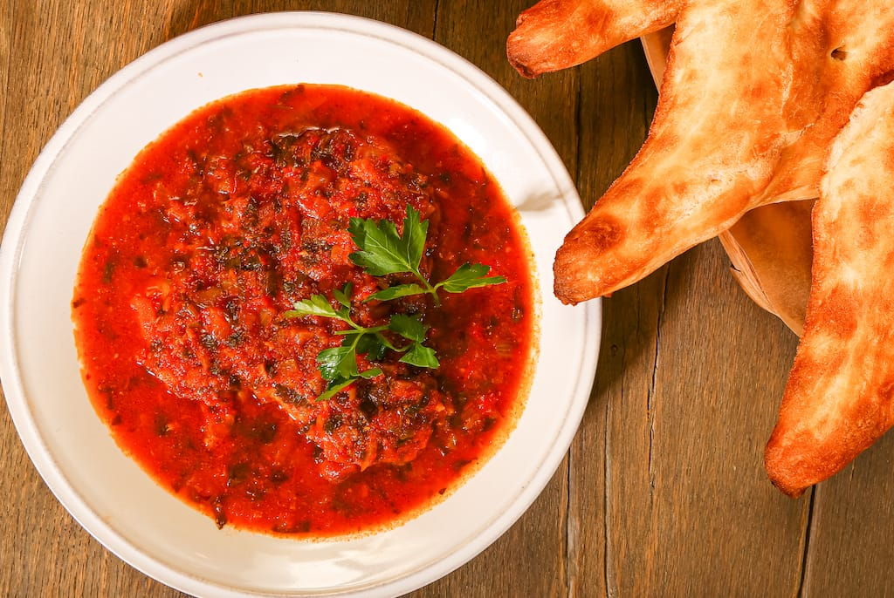
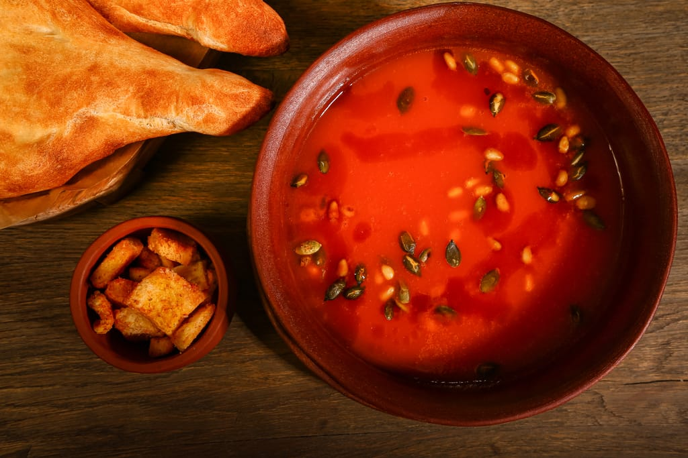

ХОЛОДНЫЕ ЗАКУСКИ

Аджапсандал
Запеченные баклажаны, паприка, томаты, специи, зелень
571р

Баклажаны, жаренные с орехами
Баклажаны, фаршированные орехами, зеленью и зернами граната
555р
САЛАТЫ

С утиной грудкой
Кедровыми орехами, зернами граната, малиновым соусом
790р
Цезарь с курицей / креветками
570/720р
ГОРЯЧИЕ ЗАКУСКИ

Эларджи
Гоми, заваренная с сыром «Сулугуни»
470р
Мамалыга
С кукурузной крупы и муки, подается с сыром «Сулугуни»
432р
СУПЫ

Суп Харчо
Традиционный грузинский суп со специями
561р

Домашняя суп-лапша с курицей и грибами
418р

Хашлама
Бульон с отварными кусочками телячьей грудинки и зеленью
829р

Крем-суп из тыквы
Морковь, лук, кедровый орех
572р
ГОРЯЧИЕ БЛЮДА
Мясо
Люля-кебаб из ягнёнка
Традиционный грузинский суп со специями
561р
Птица
Люля-кебаб из ягнёнка
Традиционный грузинский суп со специями
561р
Рыба
Люля-кебаб из ягнёнка
Традиционный грузинский суп со специями
561р
ГОРЯЧИЕ БЛЮДА НА УГЛЯХ
Люля-кебаб из ягнёнка
Традиционный грузинский суп со специями
561р
ГАРНИРЫ И СОУСЫ
Люля-кебаб из ягнёнка
Традиционный грузинский суп со специями
561р
ДЕСЕРТЫ
Люля-кебаб из ягнёнка
Традиционный грузинский суп со специями
561р
НАПИТКИ ОТ ШЕФА
Люля-кебаб из ягнёнка
Традиционный грузинский суп со специями
561р

Доставка на дом
📞 8 (985) 491-32-32
 tiflisskiy_dvorik_
tiflisskiy_dvorik_
Тут нужно написать что-нибудь лиричное, например, обращение от шеф повара или фотографию основателя ресторана
г. Москва,
ул. Остоженка, 32/2
Оставить отзыв

ООО «Тифлис»
ИНН 7706436472
119180, Россия, г. Москва,
улица Остоженка, 32/2